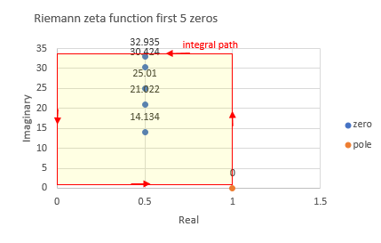
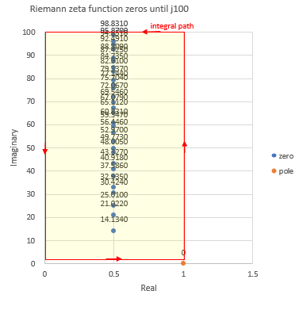

Riemann zeta function and argument principle
According to argument principle, the number of zeros and poles inside of
rectangle area of Riemann zeta function is calculated, integral by piecewise quadrature method.
Due to calculation error occurs, result which means the difference between the number of zeros and poles,
becomes complex number, almost integer.
mpmath is used to compute Riemann zeta function and its derivative.
usage
example 1, first 5 non-trivial zeros rectangle area
python zeta_zeros.py
vertical horizontal position [0.1, 33.0] [0.0, 1.0]
piecewise quadrature step 0.01
vertical horizontal division number 3290 100
result (4.99999386888865 + 0.00026736587192154j)

example 2, improvement calculation error to use smaller piecewise quadrature step. it takes more time.
python zeta_zeros.py -d 0.001
vertical horizontal position [0.1, 33.0] [0.0, 1.0]
piecewise quadrature step 0.001
vertical horizontal division number 32900 1000
result (4.9999999386888 + 2.67364609117596e-6j)
example 3, first 5 non-trivial zeros and pole rectangle area. result, reduce one.
python zeta_zeros.py -y 1.1 -a -0.1
vertical horizontal position [-0.1, 33.0] [0.0, 1.1]
piecewise quadrature step 0.01
vertical horizontal division number 3310 110
result (4.00012873370994 + 5.0342983213897e-6j)

example 4, rectangle area until j100. result, the number of zeros is 29.
python zeta_zeros.py -b 100
vertical horizontal position [0.1, 100.0] [0.0, 1.0]
piecewise quadrature step 0.01
vertical horizontal division number 9990 100
result (28.9999988534685 + 0.000267366957181842j)

And also, zeta_zeros_colab_notebook.ipynb is a colab notebook.